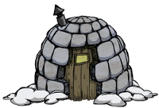

| Walrus Camp | |
|  |
|
| Spawns | |
| Renewable? | Can't be destroyed |
| DebugSpawn | "walrus_camp" |
| “ | This won't be safe come winter. | ” |
| –Woodie | ||
Walrus Camps (or Igloos) are naturally generated and indestructible structures that spawn the following hostile mobs: MacTusk, Wee MacTusk and Blue Hounds. They are used as a base by these mobs, known collectively as the MacTusk 'n' Son Scottish Nobleman Walrus Hunting Party. The Walrus Camp will only spawn mobs during Winter. Walrus Camps will spawn on all terrain, except Marsh Biomes. The igloo often appears near Maxwell's Door, and two or more will often spawn in a close vicinity to each other. The MacTusk Hunting Party will spawn every 2–5 days from a fully functioning Walrus Camp.
If the player stands by the Igloo as Winter sets in, it won't become a camp until it is off-screen. Similarly, the camp won't go away in the Summer until it is off-screen.
A Walrus Camp in summer.
As its nickname suggests, the Walrus Camp is an igloo, with a wooden door, a window, and a chimney. During the Summer, the inactive Walrus Camp is a big maroon circle on the ground, which can be walked over. Even when it is not winter, the Walrus Camp appears as an igloo on the map.
The Walrus Camp will not light up at night if all members of MacTusk N' Son are dead, and at night time, the party will not spawn unless the two Blue Hounds guarding the camp will spot the player or other mobs.
Since Walrus Camps are spawning enemies (Blue Hounds and Walrus hunting duo) it's possible to trap them or kill them as they spawn. One of the easiest ways to do that is to place a couple of Spider Dens using Spider Eggs obtained during summer in order to let them grow to at least Tier 2. To further simplify the farming, having a Spiderhat equipped will render spiders in the vicinity non-hostile.
The best way is give meat to 2 or 3 Pigs and make them fight the walruses and hounds.
Another way that works only once (before resetting) is to place Tooth Traps and Bee Mines in the area in front of the igloo where the hunting party will come out. A row of four Bee Mines and a few Tooth Traps around them is enough to take down the party.
Another way is to build 2-4 Pig Houses around the Walrus Camp. Then enclose it with walls in a tight space and make sure that the area is passable. There must be no single "exits" so that MacTusk and Wee MacTusk have no chance of running away. However, Pigs will only attack the hounds but not the 2 walruses unless provoked. It is advisable to make this during summer since these mobs are not around. A player can use a Hammer to smash a single wall to get the loot inside after the Pigs have killed the Hunting Party. Be warned that the player will not get meat drops, since the surviving Pigs will eat the meat on sight.
Bases near Walrus Camps are ill-advised, since the hunting party has a long range.
")
| Naturally spawning world objects | |
| Plants | Berry Bush • Carrot • Cave Banana Tree • Cave Lichen • Flower (Evil Flower, Fern) • Grass • Light Flower • Lureplant • Mandrake • Mushrooms • Mushtree • Plant • Reeds • Sapling • Spiky Bush • Tree • Totally Normal Tree |
| Mobs and Mob Housing | Beehive • Hound Mound • Pond • Pig Fortress • Pig House • Pig King • Pig Torch • Rabbit Hutch • Rundown House • Slurtle Mound • Spider Den • Spilagmite • Splumonkey Pod • Tallbird Nest • Walrus Camp • Worm Hole |
| Inanimate | Ancient Pseudoscience Station • Ancient Statue • Basalt • Boulder • Gramaphone • Grave • Harp Statue • Headstone • Suspicious Dirt Pile • Marble Pillar • Marble Tree • Maxwell's Door • Maxwell Statue • Maxwell's Light • Merm Head • Nightmare Light • Nightmare Lock • Nightmare Throne • Obelisk • Ornate Chest • Pig Head • Pillars • Relic • Sinkhole • Skeleton • Stalagmite • Touch Stone • Thulecite Wall |
| Things | Box Thing • Crank Thing • Eye Bone • Metal Potato Thing • Ring Thing • Wooden Thing |
{kind=link}
{kind=link}
{kind=link}
{kind=link}
{kind=link}
{kind=link}
{kind=link}